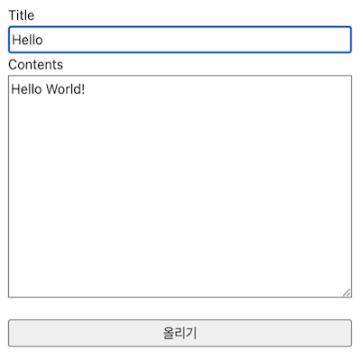
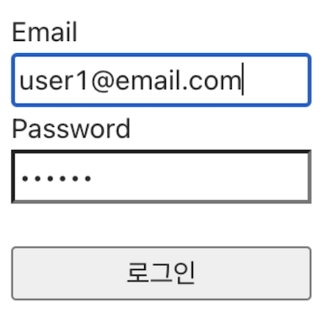
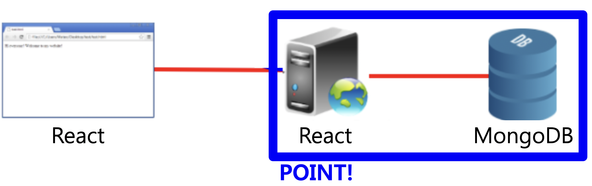
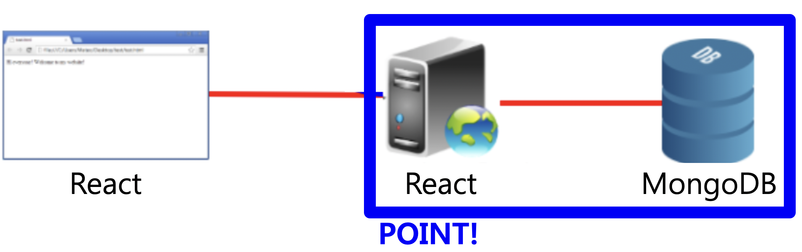

実装機能

|
内容を見る機能 現在アップロードされているすべての投稿を閲覧できます。 |
|  |
内容を書く機能 新しい投稿を書くことができます。 |
|  |
ログインと会員登録する機能 ホームページにログインでき、まだ会員でない場合は会員登録できます。 |
背景と目的
最近、企業ごとに存在するのがまさにホームページです。 最近、ホームページは主にReactで作られています。 これほどReactはWeb開発者たちに基礎素養になりました。 そこで、Web開発者になるために基礎素養を育むために私だけのホームページを実装しました。
最近、企業ごとに存在するのがまさにホームページです。 最近、ホームページは主にReactで作られています。 これほどReactはWeb開発者たちに基礎素養になりました。 そこで、Web開発者になるために基礎素養を育むために私だけのホームページを実装しました。
学んだこと
- ウェブページでHTTPリクエストを送信する方法と、GETとPOSTの違いを学びました。
- ReactでJSON Arrayを利用する方法を学びました。
- MongoDBでデータベースを構築する方法とReactサーバーと連携する方法を学びました。
進行手順
- Reactをインストールした後、新しいプロジェクトを作成して実行しましたが、以下のエラーメッセージが表示されたため実行されませんでした。
command failed with exit code 1 - 長く調査した末にM1チップを搭載したMacBookはNode v.15以上を敷かなければエラーなしで実行されることが分かりました。したがって、最新バージョンのv.16を敷いて再度実行すると、正しく実行されました。
- John Ahnさんの「基礎ノードReact講義」を一つずつ従ってログイン＆ログアウトホームページを実装しました。ここにホームページのトップバーを作成し、投稿のアップロードと閲覧機能を追加することにしました。
- 投稿アップロードは会員登録機能を少し変更するだけですが、投稿検索機能はデータベースから複数のデータを取得する必要があります。しかし、Reactでどのように実装するのかわからないので、Googleで調べてみるとfind（）関数を使用する必要があることがわかりました。
- 最初は何も出ませんでした。データ自体が渡されていません。ログイン機能を見ると、データを渡すときはJSON配列の形式で渡す必要があることがわかりました。
- JSON配列形式に変換して転送するので、正常にデータを受け取り、投稿リストを出力しました。
- このようにして目的のプログラムを実装できました。
能力強化のために最も努力したこと
Reactでホームページ実装、Webサーバー構築、データベース（MongoDB）と連動
Reactでホームページ実装、Webサーバー構築、データベース（MongoDB）と連動
全体構造


使用技術
React JS, MongoDB
React JS, MongoDB
開発環境
Visual Studio Code
Visual Studio Code
追加の説明